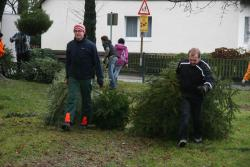

Weihnachtsbaumaktion 2012 für die Jugendarbeit der Pfadfinder
Weihnachtsbaumaktion 2012
Am 07. Januar 2012 fand die traditionelle Weihnachtsbaumaktion der Pfadfinder vom Stamm St. Josef Haßlinghausen statt. Morgens um 9:00 Uhr trafen sich 18 Pfadfinderinnen und Pfadfinder im Alter von 11-29 Jahren, um gemeinsam die Bezirke aufzuteilen, in denen die Bäume eingesammelt werden sollten.
 |
 |
| Pfadfinder ziehen die eingesammelten Bäume… | … zur Lagernung auf die Kirchwiese. |
 |
|
| Hier werden die Bäume bis zur Osternacht gelagert, um sie dann im traditonellen Osterfeuer zu verbrennen. |
Bei regnerischem Wetter sammelten die Pfadfinder knapp 100 Bäume und nahmen dabei 469,- Euro ein. Eine Hälfte dieses Betrages wird in die Jugendarbeit des Pfadfinderstammes St. Josef Haßlinghausen unmittelbar einfließen. Die andere Hälfte wird der Pfadfinder-Förderverein erhalten, um die Gruppenarbeit mit den Kindern und Jugendlichen zu ermöglichen und zu intensivieren.
Pünktlich um 13:30 Uhr gab es zum Abschluss der Sammelaktion noch ein gemeinsames Mittagessen im Gemeindeheim. Anschließend trennten sich die Wege bis zur nächsten Aktion.
Danken möchten wir der Firma Heizung Lange und der Firma TEWA Gronau, die uns mit ihren Fahrzeugen unterstützt und dadurch die Akton ermöglicht haben.
P. Berretz
Be 07.01.2012


{kind=link}
{kind=link}
{kind=link}
{kind=link}